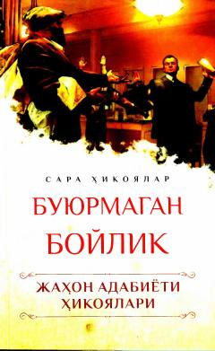

BBNobel mukofoti sovrindorlari qalamiga mansub sara jahon adabiyoti hikoyalari to'plami.
Ushbu to'plam jahon adabiyotining Nobel mukofotiga sazovor bo'lgan mashhur yozuvchilari qalamiga mansub sara hikoyalarni o'z ichiga oladi. Asarlar insonparvarlik, mehr-muhabbat va olijanoblik kabi yuksak insoniy fazilatlarni tarannum etadi.